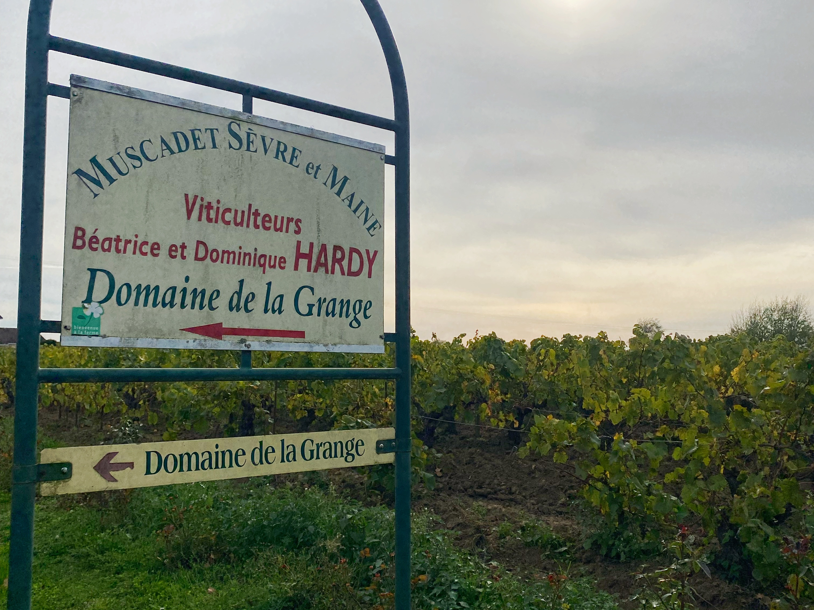
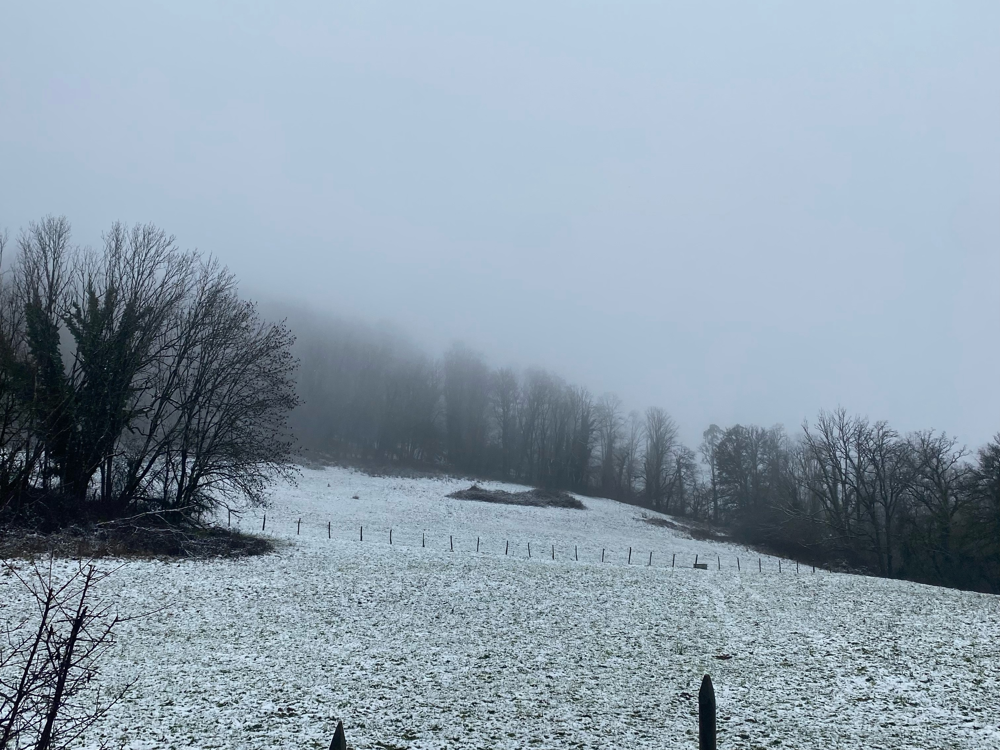
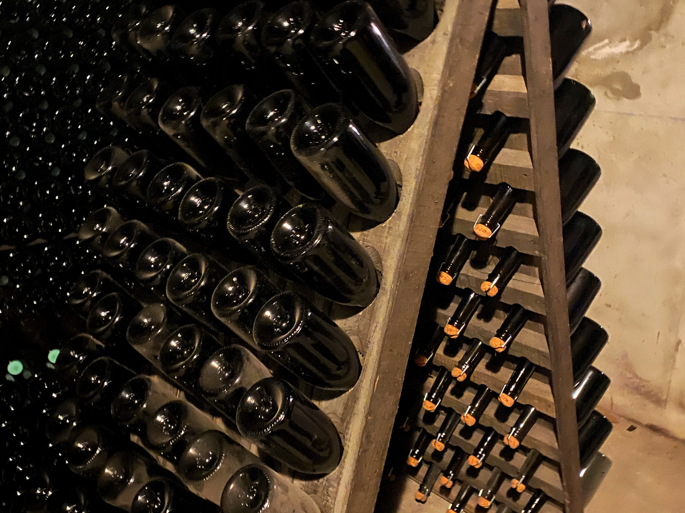
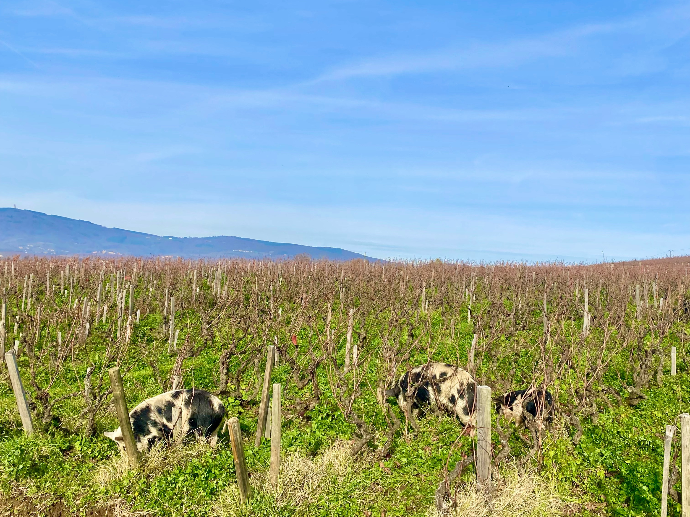
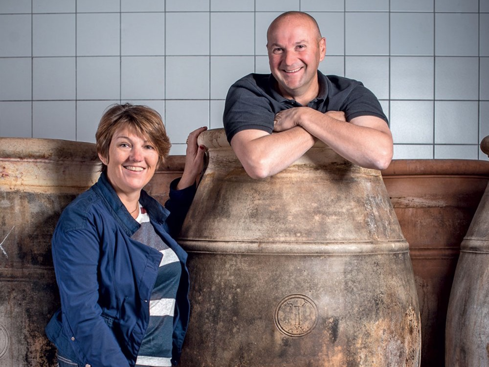
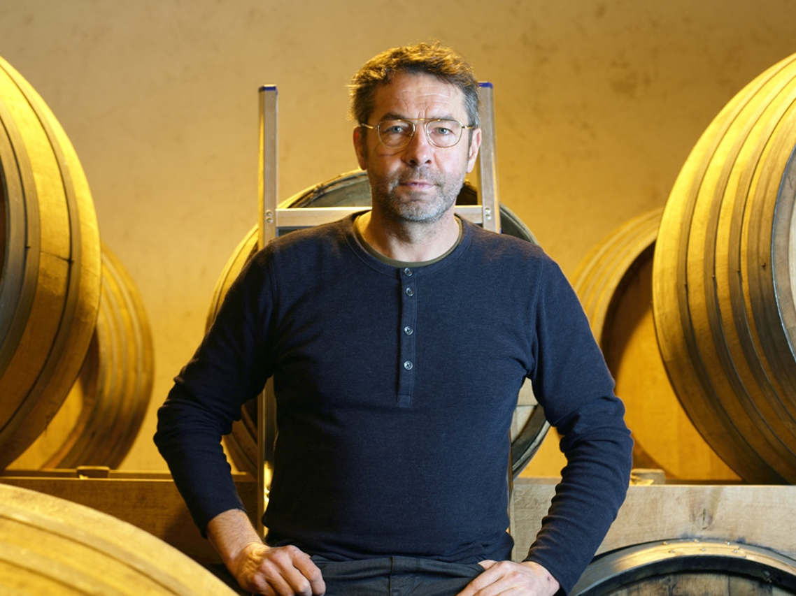

Guide Viticole · Marguerite
La Route
des Vins
320+
Domaines
89
Départements
12
Régions
Parcourez les vignobles de France,
découvrez les domaines, planifiez votre route.
Explorer
Les étapes
Les étapes
de la route

Pays de la Loire
Des vignes de Muscadet aux châteaux de Touraine.

Jura
Vin Jaune, Crémant et cépages autochtones sur argilo-calcaires.

Champagne
Grandes maisons et vignerons indépendants de la Montagne de Reims.

Bordeaux
Châteaux mythiques et merlots de la Rive Droite.

Côte Roannaise
Gamay Saint Romain sur granit, fraîcheur et verticalité.
Sélection
Fiches
Fiches
domaines
Tous les domaines →
Val de Loire
Loïc Mahé
Savennières · Chenin Blanc

Jura
Stéphane & Bénédicte Tissot
Arbois · Chardonnay, Savagnin

Champagne
Pascal Agrapart
Côte des Blancs · Chardonnay
Loire
Eric Chevalier
Muscadet Côtes de Grand Lieu · Melon de Bourgogne
Créez votre
propre route
Connectez-vous pour sauvegarder vos domaines, noter vos cuvées préférées et partager votre carnet de route avec vos amis.